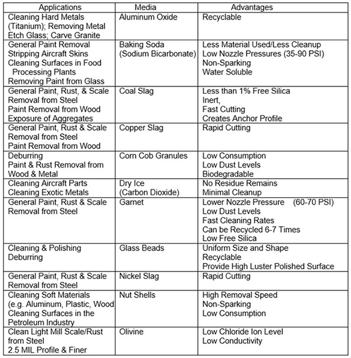

06.I Abrasive Blasting
06.I.01–06.I.03
06.I.01 General. Silica sand shall NOT be used as an abrasive blasting media. Alternative abrasive blasting materials are available and listed in Table 6-3. Depending on the application, one of these alternative materials is suggested for use as an abrasive blasting media.
- Abrasive blasting operations shall be evaluated to determine composition and toxicity of the abrasive and the dust or fume generated by the blasted material, including surface coatings. This determination shall be documented on the AHA (Activity Hazard Analysis) developed for the abrasive blasting activity.
- Written operating procedures shall be developed and implemented for abrasive blasting operations, including pressurized pot procedures (filling, pressurizing, depressurizing, and maintenance and inspection). The procedures should be added as an appendix to the APP.
- The concentration of respirable dust and fume in the breathing zone of individuals exposed to the blasting operation shall be maintained below any OEL for the material being blasted and the blasting agents or its byproducts.
- No employee will be allowed to work in abrasive blasting operations unless he has met the medical surveillance and training and experience requirements, and has been provided the appropriate PPE.
- All production and control systems used in a stationary abrasive-blasting process shall be designed or maintained to prevent escape of airborne dust or aerosols in the work environment and to ensure control of the abrasive agents.
- Pressurized systems and components shall be inspected, tested, certified and maintained in accordance with the requirements of Section 20.
- Engineering controls for noise and dust shall be used even if they cannot reduce the exposures to below OEL (significantly reduces noise and dust exposure to the employees).
TABLE 6-3
Abrasive Blasting Media: Silica Substitutes

06.I.02 Blast Cleaning Enclosures and Rooms.
- The ventilation in all blast enclosures shall be measured annually to confirm the flow is adequate and the system does not require cleaning or maintenance. Exhaust systems shall be part of a regular cleaning and maintenance program.
- All air inlets and access openings shall be baffled to prevent the escape of abrasive agent and contaminant and the recommended continuous airflow into the air inlets is a minimum of 250 fpm (4.6 kph).
- Negative pressure shall be maintained inside during blasting.
- The rate of exhaust shall be sufficient to provide prompt clearance of the dust-laden air within the enclosure after cessation of the blasting.
- If abrasive blasting is automated, the blast shall be turned off before the enclosure is opened. The exhaust system shall be run for a sufficient period of time to remove the dusty air within the enclosure to minimize the escape of dust into the workroom and prevent any health hazard.
- In the room, a cleanup method other than broom sweeping or compressed air blowing shall be used to collect the abrasive agent after blasting (e.g., vacuum cleaning). If the blasting agent is removed manually, appropriate personal protective equipment, including respiratory protection shall be worn and not removed until outside the blasting room.
06.I.03 Blasting without Enclosures.
- If abrasive blasting must be performed inside a building without enclosures, respiratory protection shall be provided for all employees in the area. Portable engineering control devices shall be used at the location to collect the entire used abrasive agent as it is applied.
- When airborne abrasive-blasting dust becomes sufficiently heavy in an area to cause a temporary safety hazard by reduced visibility, or discomfort to the unprotected employees not engaged in abrasive blasting, such operations in the affected area shall be discontinued until the airborne dust is removed by exhaust ventilation and the settled dust has been removed from the horizontal surfaces in the area. If such operations have to continue, appropriate respiratory protection shall be provided to those employees remaining in the area.
- Abrasive materials shall not be allowed to accumulate on aisles and walkways to create a slipping hazard.
- If wet abrasive blasting is employed to reduce dust exposures, the aerosols produced and the dried residues that become airborne might be potential hazards and shall be considered.
{kind=link}